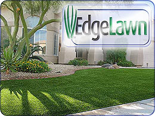
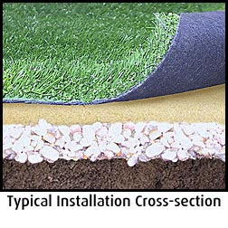
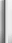
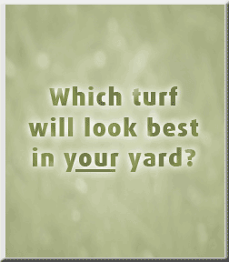
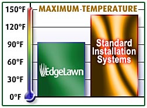

EdgeLawn Yard Turf:
Synthetic Lawn Grass
Luxurious artificial grass turf - front & back yards
A Cooler Synthetic Lawn for a Hot South Florida
The unique installation methods used for our proprietary EdgeLawn® Synthetic Lawn System™ will keep the surface temperature more comfortable during hot weather.
EdgeLawn stays cooler in the South Florida summer heat.
That's because we have a specialized process shown to keep surface temperatures up to 20-50% cooler than typical installations, which makes a huge difference to your tender feet!
No Watering. No Mower. No Fertilizer. No Pesticides.
Fresh, clean, renewable water resources are becoming more scarce, yet everyone wants the comfort and beauty of a thick, green lawn. How about a beautiful, perfectly manicured year-round lawn without the hassle, cost and recurring expenses of constant mowing & maintenance?
Putters Edge offers one of the widest selections of premium artificial lawn turfs. Unlike most turf companies, we have turf solutions from multiple synthetic turf mill sources.
Many commercial entities have found that adding synthetic turf to their grounds - hotel, daycare, church, dog kennels, schools, etc - provides a functional and cost-effective landscaping solution.
Home or business, a perfect artificial lawn turf for you
Choose Putters Edge EdgeLawn Turf for your landscape:
- Wide variety of turf styles available from two of the most respected and experienced (over 50 years combined) artificial turf mills.
- Always looks and feels like a perfectly healthy natural grass lawn, without any of the maintenance.
- Multiple"grasses" to meet your specific landscaping need: Centipede, Rye, Zoysia, Bermuda, and more.
- Eliminate annual maintenance costs and effort required to water, mow, overseed, fertilize, apply insecticide, etc.
- Attractive, durable and safe for years of enjoyment - great for families with kids and pets.
- Won't attract insects, accidents wash right through, and allergen-free.
- Effective water conservation while providing warmth, beauty & functionality of natural grass.
- We love transforming yards, and we treat every project as if it were being built in our own home or business.
 |
||
|  | ||
|  | ||

Artificial Turf Simulated Sunlight (heat) Test
Have more questions? Please Contact us